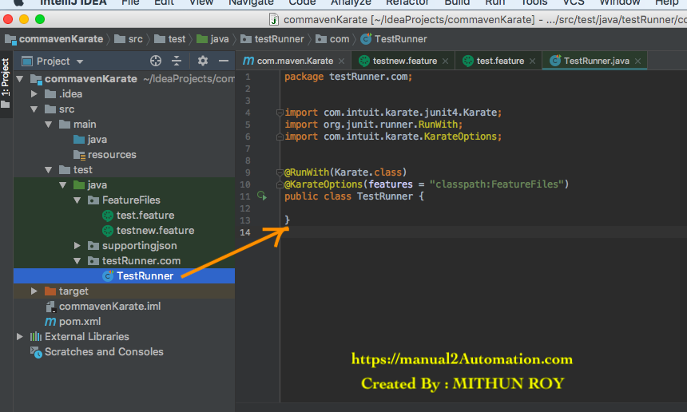
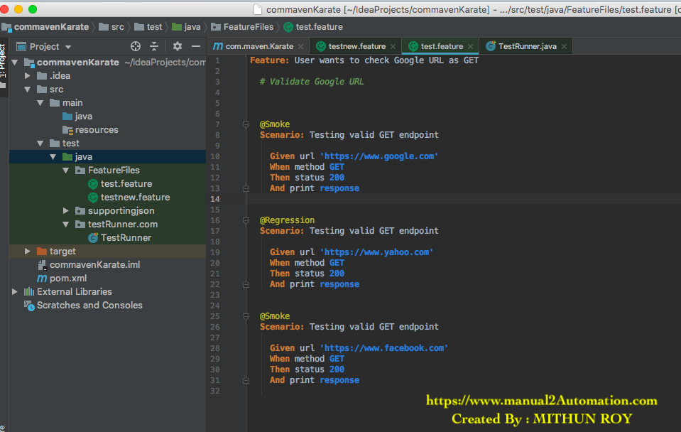
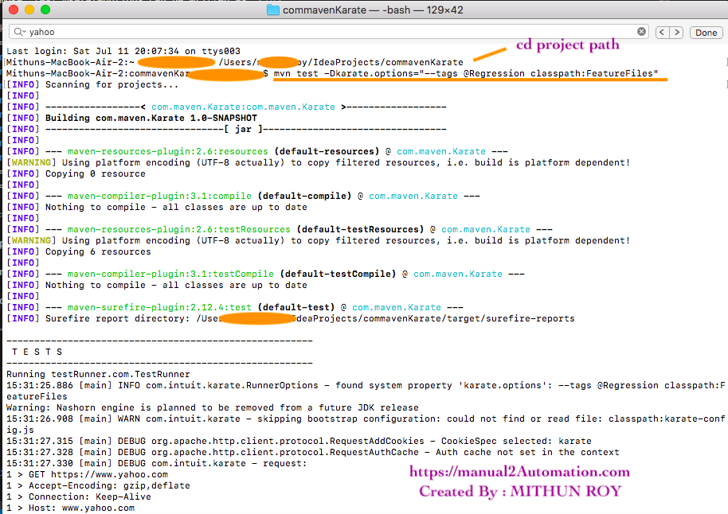

What is Karate Test Runner File?
Test runner class also acts as an interlink between feature files.
Right click on src/test/Java folder --> New --> Package --> Give Package name as testRunner.
Right click on testRunner package --> New --> Class --> Give class name as
any class name.
Modify your testRunner class file as below.

//manual2Autpmation.com
//Created By : MITHUN ROY
package testRunner.com;
import com.intuit.karate.junit4.Karate;
import org.junit.runner.RunWith;
import com.intuit.karate.KarateOptions;
@RunWith(Karate.class)
@KarateOptions(features = "classpath:FeatureFiles")
public class TestRunner {
}
NOTE:Below line will execute all feature files present under 'FeatureFiles' Package. Here 'classpath' key is intelligent enough to pick your project path.
@KarateOptions(features = "classpath:FeatureFiles")
NOTE:Below line will execute only 'test.feature' file under 'FeatureFiles' Package.
@KarateOptions(features = "classpath:FeatureFiles/test.feature")
NOTE:Choose multiple feature files from multiple packages like below:
package testRunner.com;
import com.intuit.karate.junit4.Karate;
import org.junit.runner.RunWith;
import com.intuit.karate.KarateOptions;
@RunWith(Karate.class)
@KarateOptions(features = { "classpath:FeatureFiles1/smoketest1.feature",
"classpath:FeatureFiles2/smoketest2.feature",
"classpath:FeatureFiles3/smoketest3.feature"})
public class TestRunner {
}Include / Exclude Tests From Feature File
Below screenshot shows Karate Feature File having 3 tests and 2 different types of TAGS :
@Smoke
@Regression

To run only 'Smoke' test @karateOptions can be written as :
package testRunner.com;
import com.intuit.karate.junit4.Karate;
import org.junit.runner.RunWith;
import com.intuit.karate.KarateOptions;
@RunWith(Karate.class)
@KarateOptions(features = "classpath:FeatureFiles/test.feature" , tags = "@Smoke")
public class TestRunner {
}
To ignore 'Smoke' test @karateOptions can be written as :
package testRunner.com;
import com.intuit.karate.junit4.Karate;
import org.junit.runner.RunWith;
import com.intuit.karate.KarateOptions;
@RunWith(Karate.class)
@KarateOptions(features = "classpath:FeatureFiles/test.feature" , tags = "~@Smoke")
public class TestRunner {
} How to pass parameter to run Karate tests from cmd/terminal as maven project
If we want to run only 'Smoke' tests then code can be written as :
Open cmd/terminal
cd 'karate project path'
mvn test -Dkarate.options="--tags @Smoke classpath:FeatureFiles"

And my pom.xml looks like below
<?xml version="1.0" encoding="UTF-8"?>
<project xmlns="http://maven.apache.org/POM/4.0.0"
xmlns:xsi="http://www.w3.org/2001/XMLSchema-instance"
xsi:schemaLocation="http://maven.apache.org/POM/4.0.0 http://maven.apache.org/xsd/maven-4.0.0.xsd">
<modelVersion>4.0.0</modelVersion>
<groupId>com.maven.Karate</groupId>
<artifactId>com.maven.Karate</artifactId>
<version>1.0-SNAPSHOT</version>
<properties>
<maven.compiler.source>1.7</maven.compiler.source>
<maven.compiler.target>1.7</maven.compiler.target>
<karate.version>0.9.4</karate.version>
</properties>
<build>
<testResources>
<testResource>
<directory>src/test/java</directory>
<excludes>
<exclude>**/*.java</exclude>
</excludes>
</testResource>
</testResources>
</build>
<dependencies>
<dependency>
<groupId>com.intuit.karate</groupId>
<artifactId>karate-apache</artifactId>
<version>0.9.5</version>
</dependency>
<dependency>
<groupId>com.intuit.karate</groupId>
<artifactId>karate-junit4</artifactId>
<version>0.9.5</version>
</dependency>
</dependencies>
</project>